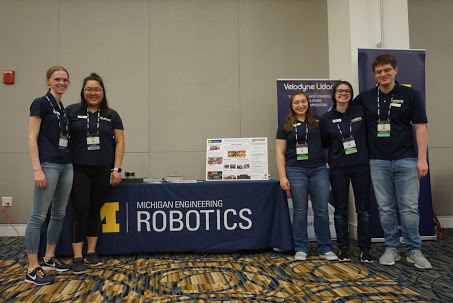

Joining FAMNM
FAMNM is open to all University of Michigan students. Our members come from many different backgrounds, colleges, and majors, and some have never even participated in {{ FIRST }} before! We know that as a UofM student, your schedule is tight. FAMNM lets you put as much or as little in as you want and works completely around your schedule. Signing up is easy! Just join us on Maize Pages and we'll get in touch.
If you have any questions, feel free to send them to famnm.admin@umich.edu

General members assist FAMNM operationally.
We encourage members to attend our biweekly
General Body Meetings to stay updated about
what FAMNM is up to. Want to help FAMNM
continue to grow and improve? Join one (or
several) of our committees!
 FAMNM helps match local teams and
potential mentors. You can choose
to help a team full time, or
participate in the Freelance Mentor program, providing
assistance to teams on an as needed basis only.
FAMNM helps match local teams and
potential mentors. You can choose
to help a team full time, or
participate in the Freelance Mentor program, providing
assistance to teams on an as needed basis only.
 Every year, FAMNM sends volunteers
to FIRST events across the state of
Michigan and beyond! We'll do our best to
make sure you can get to all the events of
your choosing. Volunteers serving in key
roles are eligible to be reimbursed for
some travel costs!
Every year, FAMNM sends volunteers
to FIRST events across the state of
Michigan and beyond! We'll do our best to
make sure you can get to all the events of
your choosing. Volunteers serving in key
roles are eligible to be reimbursed for
some travel costs!